Ominaisuudet
Varsto rakentuu yhden ajatuksen varaan: tiedostosi ovat itse valitsemillasi laitteilla ja tallennuspaikoissa, jokainen kopio on salakirjoitettu, ja sovellus pitää rehellistä, allekirjoitettua kirjanpitoa siitä, missä kukin lohko on. Alla kuvatut ominaisuudet seuraavat tästä. Kaikki alla kuvattu on olemassa jo nyt; lopun luettelo kertoo, mitä on suunniteltu ja dokumentoitu mutta ei vielä toteutettu. Käyttötapaukset-sivu kertoo saman tarinan käyttäjän näkökulmasta, tilanne kerrallaan.
Laitteet, jotka eivät ole koskaan yhtä aikaa verkossa, päätyvät silti samaan tilaan
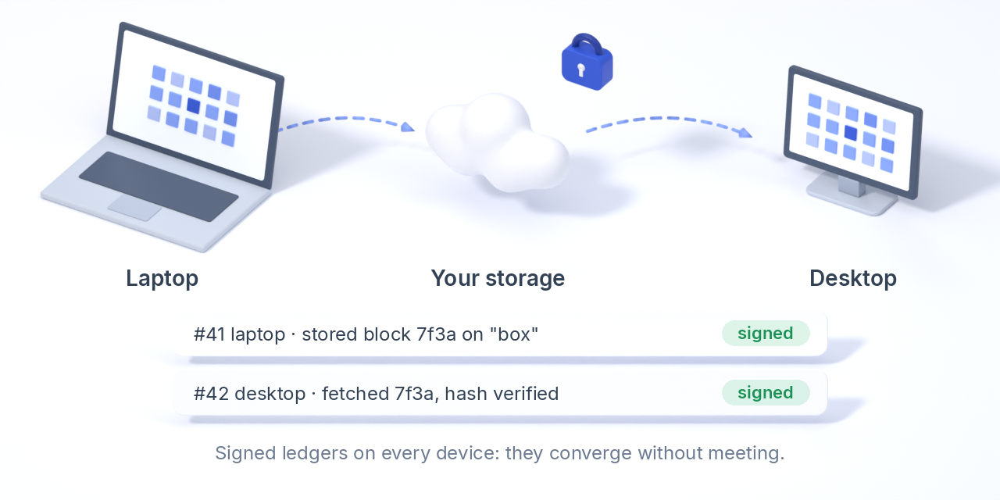
Palvelinta ei ole. Kukin laite kirjoittaa salattuja lohkoja omistamaasi tallennuspaikkaan ja niiden viereen allekirjoitetun ja salatun kirjanpidon siitä, mitä se teki. Toinen laite lukee kirjanpidon päästessään samaan tallennuspaikkaan, tarkistaa allekirjoitukset ja tietää, mitä on olemassa, missä se on ja mitkä kopiot joku toinen on tarkistanut. varsto fsck --verify laskee jokaisen objektin tiivisteen uudelleen ja raportoi väitteet, joita tallennuspaikka ei pysty todentamaan. Vanhasta varmuuskopiosta palautettu laite tunnistetaan ja eristetään.
Käyttötapaus: kannettava, joka on viikon matkoilla, ja pöytäkone kotona. Molemmat kirjoittavat samaan bucketiin tai NAS-jakoon aina kun pystyvät; niiden ei tarvitse koskaan olla päällä samaan aikaan.
Siirtolevy: levy, joka kulkee kahden laitteen välillä
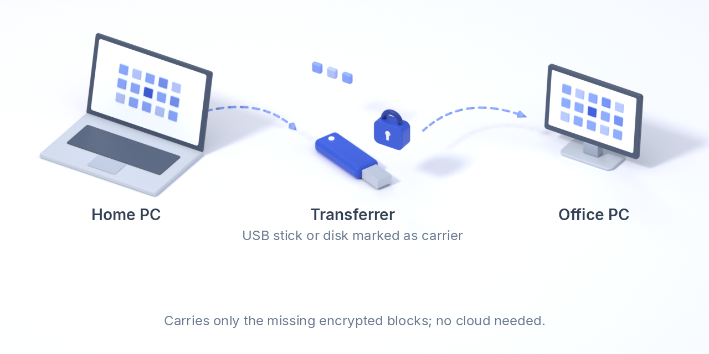
Merkitse USB-tikku tai ulkoinen levy siirtolevyksi. Se saa vain ne salatut lohkot, jotka toiselta laitteelta vielä puuttuvat, ja kun lohko on molemmissa päissä, se poistetaan tikulta. Kun kodin ja toimiston välillä liikkuu gigatavuittain videota, tämä on nopeampaa kuin mikään lähetys, ja se toimii täysin ilman internetiä.
Käyttötapaus: editoi videoaineistoa toimistolla, vie tikku kotiin ja kytke se; kotikone saa muutokset kiinni minuuteissa, ja tikku tyhjentää itsensä seuraavaa matkaa varten.
Luottamuksettomat replikat: varmuuskopiotilaa, johon sinun ei tarvitse luottaa
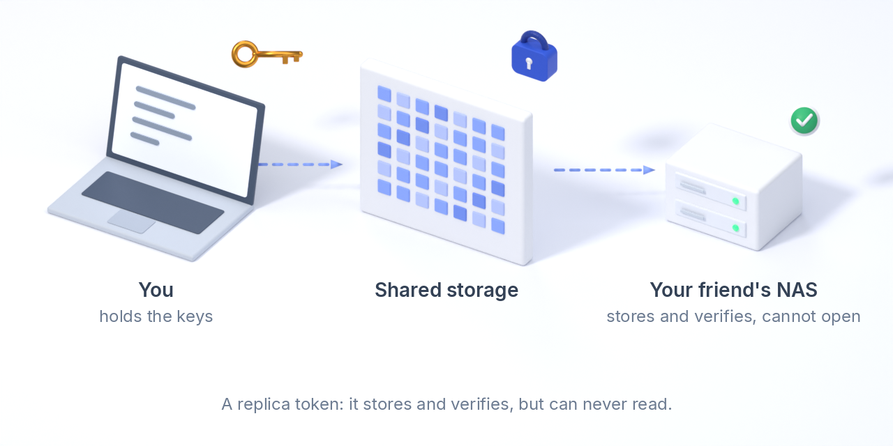
Anna ystävälle, sukulaiselle tai vuokrapalvelimelle replikatunniste. Sen laite kopioi salatut objektisi yhteisestä sijainnista omalle levylleen, tarkistaa jokaisen tiivisteen ja raportoi kopiot kirjanpitoosi. Se ei koskaan saa avainta, jolla voisi avata mitään; se näkee objektien nimet ja koot, täsmälleen saman kuin tallennuspalvelun tarjoaja. Kaksi käyttäjää voi näin säilyttää toistensa varmuuskopioita.
Käyttötapaus: sinä ja ystäväsi säilytätte kumpikin kopiota toisen holvista kotona olevalla NAS:lla. Kumpikaan ei pysty lukemaan toisen tiedostoja; kumpikin näkee omasta sovelluksestaan, että kopiot ovat olemassa ja tarkistettuja.
Varmuuskopiot: salatut kopiot toisessa paikassa, joita mikään ei muuta
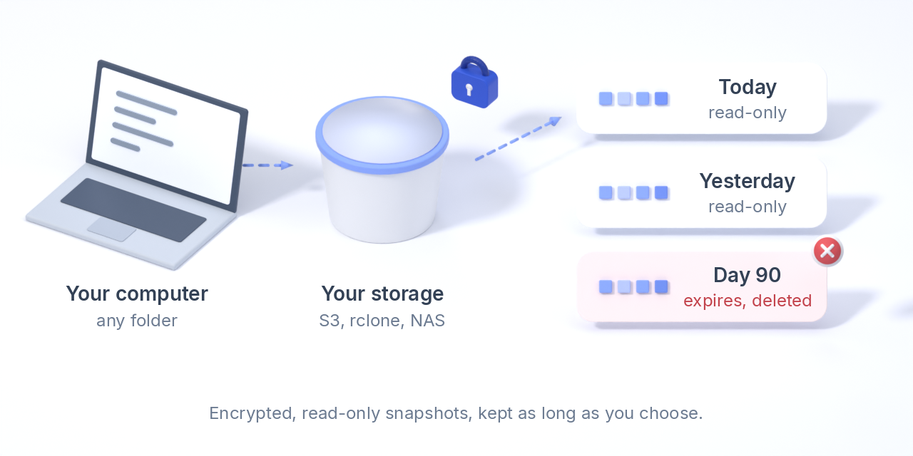
Valitse mikä tahansa kansio millä tahansa laitteella, esimerkiksi asiakirjasi, projekti tai palvelimen datahakemisto. Varsto varmuuskopioi sen ulkoisiin tallennuspaikkoihisi: S3-bucketiin, rclone-etäkohteeseen, NASiin tai kylmätallennukseen. Jokainen varmuuskopio on vain luku -muotoinen versio, joka on salattu täsmälleen kuten kaikki muukin, mitä Varsto säilyttää. Se on vain näissä tallennuspaikoissa, ei koskaan muilla laitteillasi. Versio otetaan päivittäin, viikoittain tai pyydettäessä. Kutakin säilytetään valitsemasi päivämäärä, oletuksena 90 päivää, ja vanhentunut versio poistetaan tallennuspaikasta. Muuttumattomat lohkot tallennetaan vain kerran, vaikka niitä käyttäisi moni versio.
Mikään ei muokkaa versiota sen ottamisen jälkeen. Palautus tehdään aina nimeämääsi hakemistoon sovelluksen Varmuuskopiot-sivulta tai komennolla varsto backup restore. Palautettavaksi voi valita uusimman version, numeroidun version tai tietyn päivän version.
Käyttötapaus: pieni toimisto varmuuskopioi joka yö yhden tietokoneen kirjanpitokansion ja toisen koneen jaetun aseman toisen palveluntarjoajan bucketiin. Kolmen kuukauden historia pysyy tallessa, eikä tietokoneiden kiristyshaittaohjelma pysty kirjoittamaan sitä uudelleen. Kenenkään ei tarvitse muistaa kytkeä levyä.
Valikoiva synkronointi paikkamerkeillä
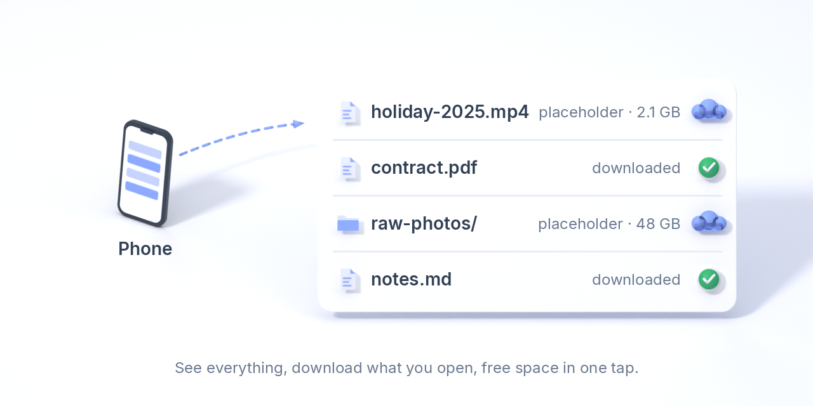
Jokainen laite voi pitää kansiota valikoivassa tilassa: koko hakemistopuu näkyy paikkamerkkeinä, tiedosto ladataan, kun pyydät sitä, ja Vapauta tilaa muuttaa sen takaisin paikkamerkiksi, kun se on turvallisesti tallessa muualla. Paikkamerkkiä ei koskaan tulkita poistoksi. Hiiren oikean painikkeen Lataa ja Vapauta tilaa toimivat Finderissa, Explorerissa ja yleisimmissä Linuxin tiedostonhallintaohjelmissa, ja paikkamerkin kaksoisnapsautus avaa tiedoston; natiivit paikkamerkit (File Provider, Cloud Files) tulevat myöhemmin. Mekanismi on sama kuin Resilio Syncin valikoivassa synkronoinnissa.
Jaa kansio toisen Varsto-käyttäjän kanssa
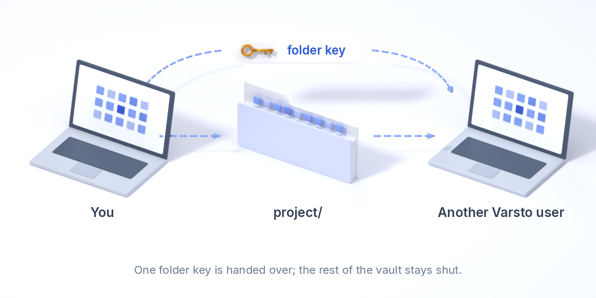
Jakaminen on avaimen jakamista: vastaanottajan laite tulostaa pyyntökoodin, omistaja sinetöi kansioavaimen sille (hybridi X25519 + ML-KEM-768) ja lähettää tunnisteen takaisin mitä tahansa kanavaa pitkin; vain pyynnön tehnyt laite voi avata sen. Vastaanottaja synkronoi kansion tallennuspaikan kautta, johon molemmat pääsevät, ja hänen laitteensa kirjoittaa oman allekirjoitetun kirjanpitonsa kansioavaimella, joten omistaja näkee myös hänen kopionsa. Tunniste avaa tuon kansion eikä mitään muuta holvista. Ennen sinetöintiä sinä ja vastaanottaja vertaatte puhelimessa tai kasvokkain kuutta pyyntökoodista johdettua sanaa, jolloin matkalla vaihdettu koodi jää kiinni. Jaetut-sivu näyttää, kenellä on pääsy, ja vahvistamanne sanat; Poista… antaa kansiolle uuden avaimen, jonka saavat vain sinä ja jäljelle jäävät jäsenet, ja tunnisteen, jota kukaan ei ole vielä hyväksynyt, voi mitätöidä samalla tavalla. QR-kutsut ovat seuraava vaihe.
Oikea taustasovellus macOS:ssä, Windowsissa ja Linuxissa
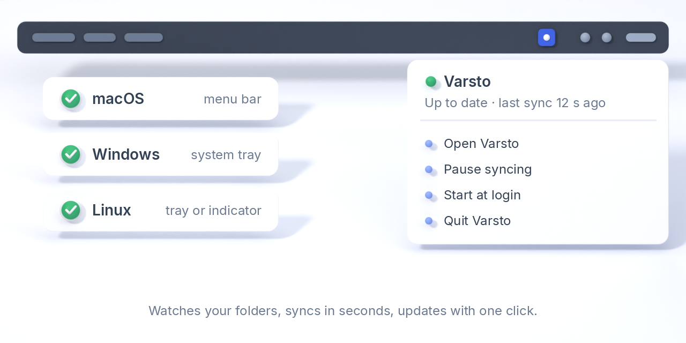
Taustapalvelu käynnistyy kirjautuessa (Linuxissa systemd-käyttäjäyksikkönä, macOS:ssä launch agentina, Windowsissa ilmoitusalueen sovelluksena), ja ensimmäinen komento ottaa sen käyttöön heti kun holvi on olemassa. Se seuraa kansioitasi ja synkronoi muutokset sekunneissa, ja muualla tehdyt muutokset se hakee säännöllisin väliajoin; synkronointi-, päivitys- tai tarkistuspainikkeita ei ole. Sama pieni ohjelma tarjoaa komentorivin ja paikallisen käyttöliittymän, joka näkyy vain omalle tietokoneellesi. Päivityksiä haetaan automaattisesti, ja niitä tarjotaan vain, kun uudempi versio on olemassa; asennus tarkistaa julkaisun allekirjoituksen ja GitHubin tarkistussummat, ja macOS-sovellus korvaa itsensä allekirjoitetusta levykuvasta. varsto transfers --watch näyttää parhaillaan käynnissä olevat lähetykset, lataukset ja vertaisliikenteen.
Omat bucketit, rclone-etäkohteet ja kylmätallennus
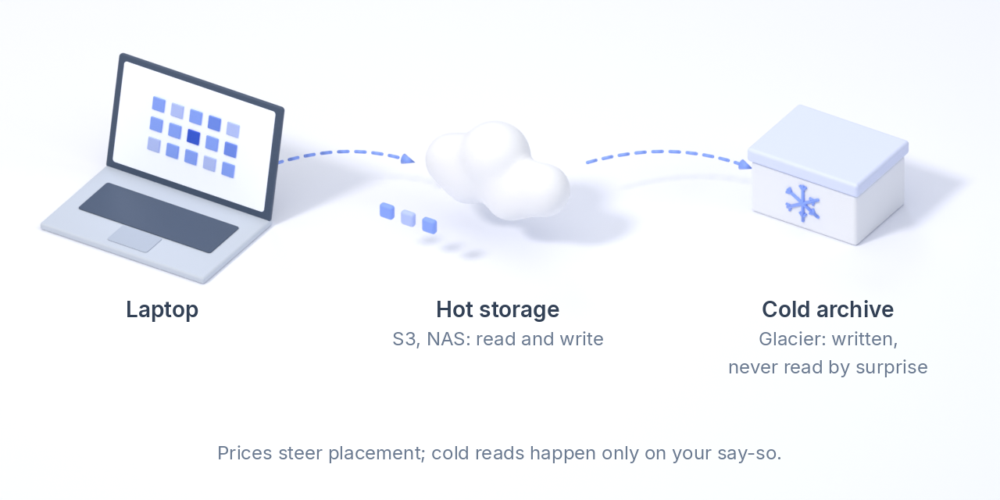
Tallennuspaikka on hakemisto, S3-yhteensopiva bucket omilla käyttöavaimillasi (AWS, Scaleway, Hetzner, Backblaze B2, Cloudflare R2, MinIO) tai mikä tahansa rclone-etäkohde, joten SFTP, WebDAV, Google Drive ja muut tulevat kaupan päälle. Tiedostot pilkotaan lohkoiksi, joiden koko määräytyy tiedoston mukaan, ja pienten tiedostojen lohkot kirjoitetaan yhteen paketteihin: tuhansien muistiinpanojen kansiosta tulee tallennuspaikkaan kourallinen objekteja tuhansien sijaan, mikä säästää pyyntöjä ja joidenkin palveluntarjoajien perimiä objektikohtaisia vähimmäismaksuja. Salaisuudet pysyvät salattuina laitteellasi; rclone pitää omansa. Arkistoluokkiin, kuten Deep Archiveen, kirjoitetaan, mutta niistä ei koskaan lueta ilman nimenomaista vahvistusta, ja sovellus ilmoittaa objektista, joka on ensin palautettava, sen sijaan että yrittäisi uudelleen. Jokaiselle tallennuspaikalle voi antaa hinnan gigatavukuukautta, ulosmenevää liikennettä ja palautusta kohden, itse asetettuna tai avoimesta hintadatasta haettuna, kun palveluntarjoaja, alue ja luokka tunnistetaan, joten sovellus näyttää, mitä kukin tallennuspaikka ja kukin kansio maksaa kuukaudessa.
Tila: hakemistot, S3 ja rclone toimivat; tallennuspaikkakohtaiset hinnat ja kuukausikustannukset Tallennuspaikat-sivulla, varsto storage price ja varsto storage list. Kansion voi kirjoittaa vain valittuihin tallennuspaikkoihin tai sijainteihin (varsto folder placement), ja varsto move (tai ”Siirrä”-ehdotus) siirtää sen lohkot tai sen käyttämättömien tiedostojen lohkot toiseen tallennuspaikkaan, esimerkiksi kylmään: ne kopioidaan, tarkistetaan, kirjataan ja vasta sitten poistetaan vanhasta tallennuspaikasta, koskaan alittamatta kansion säilytyssääntöä eikä koskaan viimeistä kopiota, ja muutos kuukausilaskuun näytetään ensin. Vain kylmätallennuksessa säilytettyjä lohkoja luetaan vasta, kun olet siirtänyt ne takaisin vahvistetulla kylmäluvulla.
Hyllyn vanhat levyt laskettuina, tarkistettuina kopioina
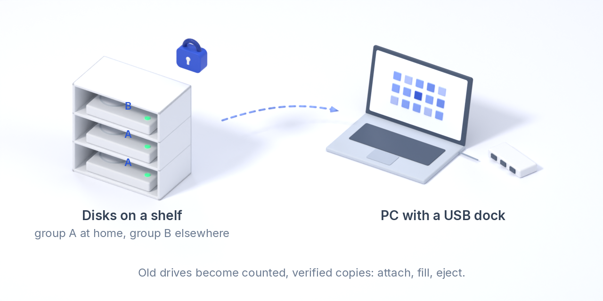
Kytke levy USB-telakkaan, anna sovelluksen täyttää se datalla, jolla on vähiten kopioita, irrota se pyydettäessä ja säilytä missä tahansa. Kun levy seuraavan kerran kytketään, sovellus tarkistaa sen, korjaa sen, mikä on lahonnut, ja lataa sen, mikä on uutta. Levyt kuuluvat ryhmiin ja sijainteihin, joten säilytyssääntö voi vaatia yhden kopion kotona ja yhden muualla. Kansion voi pitää pelkästään levyillä, niin moneen kertaan kopioituna kuin haluat, ilman yhtään pilvikopiota.
Tila: levyvarasto toimii: lisääminen, täyttäminen varauksen rajoissa, tarkistus (koot tai täysi tiivisteiden uudelleenlaskenta, jonossa olevat poistot toteutetaan), irrotus ja käytöstä poisto; levyt tunnistetaan merkintätiedostostaan missä tahansa ne ilmestyvätkin, ja poissa olevalla levyllä olevista tiedostoista sanotaan ”attach disk data-01 (shelf)”. Levyryhmät pitävät N kopiota eri sijainneissa säilytettävillä levyillä (jokaisella levyllä on sijainti; disk check täyttää sen, mitä sijainnista puuttuu, säilytyssäännöt laskevat jokaisen levykopion sen sijaintiin ja raportoivat lohkot, jotka eivät täytä sääntöä), ja vain levyvarastoon kirjoitettu kansio on ”vain levyillä” -kansio.
Mobiilisovellukset, jotka eivät säilytä mitään selväkielisenä
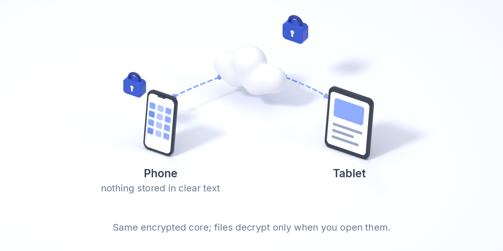
Androidissa ja iOS:ssä toimii sama salattu ydin. Tiedostot pysyvät laitteella salattuina ja puretaan, kun avaat ne; esikatselukuvat luodaan kerran, salataan ja jaetaan muille laitteillesi. Androidin alfa on sivuladattava APK, jossa on tiivis tiedostoluettelo (pitkä painallus valitsee ladattavat tai vapautettavat tiedostot); iOS-sovellus käännetään ja ajetaan Simulatorissa jokaisen muutoksen jälkeen, eikä sitä ole vielä ajettu oikealla laitteella.
Tila: kesken. Puhelimella salattuna pidetty kansio sisältää puhelimessa vain salattuja lohkoja, samoja kuin tallennuspaikkasi; valikoiva synkronointi päättää, mitkä tiedostot pidetään puhelimessa, kuten missä tahansa kansiossa, ja puhelimessa lisätyt tiedostot salataan heti niiden saapuessa. Android-sovellus näyttää tällaisten kansioiden kuvat, videot (kelauksen kera), äänen ja tekstin omassa katseluohjelmassaan, muistissa purettuina eikä koskaan puhelimeen kirjoitettuina; PDF:t ja muut tiedostot avautuvat toisessa sovelluksessa, joka saa puretun kopion, jonka Varsto poistaa lukittuessaan tai käynnistyessään uudelleen. Kameralähetys lähettää uudet kuvat ja videot kansioon YYYY/MM-alikansioihin, halutessasi vain Wi-Fi-yhteydellä tai latauksen aikana. iOS:ssä kumpaakaan ei vielä ole.
Kvanttiturvallinen hybridisalaus kaikkialla, missä julkista avainta käytetään
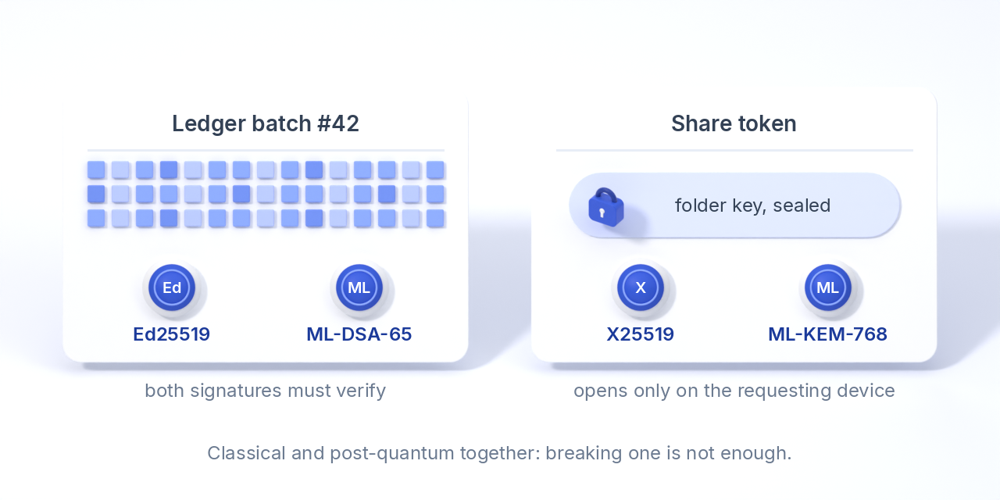
Allekirjoitukset ovat hybridejä: jokaisessa kirjanpitoerässä on samojen tavujen yli laskettu Ed25519-allekirjoitus ja ML-DSA-65-allekirjoitus (FIPS 204), ja erä hyväksytään vain, jos molemmat ovat kelvollisia. Avain, jossa on kvanttiturvallinen osa, ei koskaan hyväksy pelkkää Ed25519-allekirjoitusta, joten kukaan ei voi riisua vahvempaa puoliskoa pois. Myös avaintenvaihto on hybridi: jakotunniste sinetöidään vastaanottajan X25519 + ML-KEM-768 (FIPS 203) -avaimelle, joten kansioavain ei koskaan kulje selväkielisenä ja tunnisteen voi lähettää mitä tahansa kanavaa pitkin.
alpha-0:lla luodut laitteet säilyttävät pelkät Ed25519-avaimensa ja pysyvät kelvollisina, koska jokaisessa allekirjoitetussa objektissa on algoritmitunniste; mitään tallennettua ei tarvinnut kirjoittaa uudelleen. Liitä tällainen laite holviin uudelleen, niin se saa kvanttiturvallisen avaimen.
MCP-palvelin: anna avustajasi lukea, analysoida ja järjestellä juuri niillä oikeuksilla, jotka myönnät
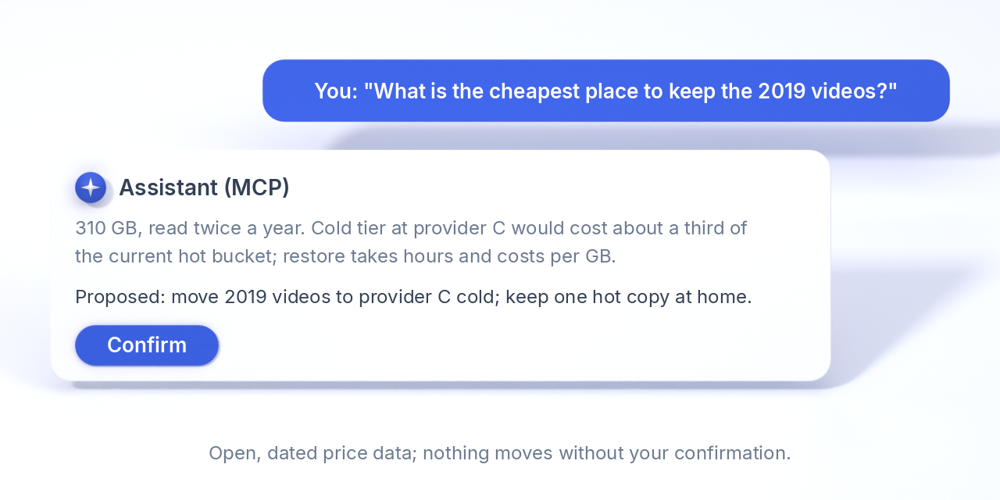
varsto mcp puhuu Model Context Protocolia, joten paikallinen malli (Ollaman, LM Studion tai minkä tahansa omalla koneellasi toimivan MCP-asiakkaan kautta), Claude tai IDE-avustaja voi työskennellä tiedostojesi kanssa: lukea ja tiivistää niitä, löytää yhteenkuuluvat, ehdottaa siistimpää rakennetta, siirtää ja nimetä tiedostot sen mukaisesti uudelleen sekä jättää hakemiston tai muistiinpanoja, kaikki myöntämiesi kansioiden sisällä ja vain luku -tilassa, ellet toisin sano. Strongroom-kansiot eivät ole koskaan näkyvissä, ja kaikki, mitä avustaja kirjoittaa, synkronoituu kuten mikä tahansa muu muutos. Se ei voi koskaan poistaa tai korvata tiedostoa: poistotyökalua ei ole, se vain luo uusia tiedostoja, ja siirrot ja uudelleennimeämiset menevät vain vapaisiin nimiin.
Varsto itse pitää kirjaa jokaisen tiedoston viimeisestä käytöstä, yhdistettynä kaikilta laitteiltasi, joten tiedosto lasketaan käyttämättömäksi vain, jos mikään laite ei ole käyttänyt sitä, ja ehdottaa, missä käyttämätön data olisi edullisinta säilyttää; avustaja näkee tämän arvion taustatiedoksi, mutta sijoitussuositukset ovat Varston oma tehtävä, eivät avustajan.
Säilytyssäännöt, jotka varoittavat ennen kuin ne rikkoutuvat
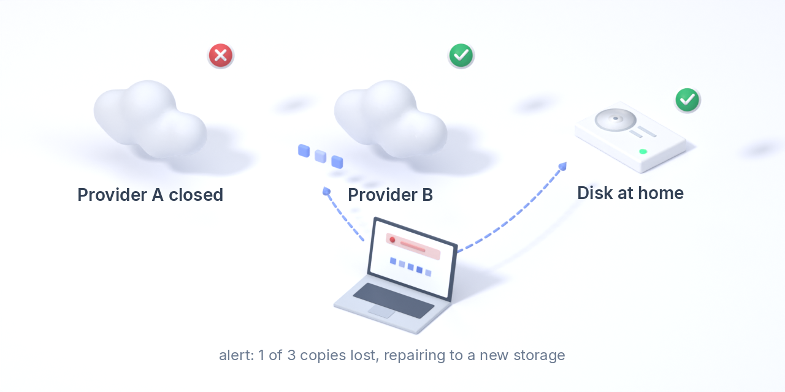
Kerro kansiolle, minkä pitää aina olla totta: ”vähintään kaksi pilvikopiota ja yksi kotona, tarkistettu 30 päivän sisällä”. Jokainen kansio alkaa oletussäännöllä: yksi kopio missä tahansa tallennuspaikassa, yksi ulkoisessa tallennuspaikassa ja yksi omilla laitteillasi tai levyilläsi, toisen laitteen tarkistamana 30 päivän sisällä. Säilytyssääntö kulkee kansion mukana, ja jokainen laite arvioi sen pelkästä allekirjoitetusta kirjanpidosta kysymättä muilta. Sovellus erottaa tilat kunnossa, vaarassa (tarkistus on vanhenemassa, tai ainoa varakopio on kylmätallennuksessa tai poissa olevalla levyllä), rikottu ja tuntematon, ja kertoo asiasta, kun aikaa vielä on: ilmoituksella taustasovelluksesta, bannerilla käyttöliittymässä ja varsto policy check -komennolla, jonka paluukoodia cron tai valvonta voi käyttää. Työpöydällä Yleiskatsauksen ”Missä datasi on” -kaavio piirtää, miten kukin kansio virtaa sitä säilyttäviin tallennuspaikkoihin ja laitteisiin, tavumäärien suhteessa, ja kuinka monta kopiota kustakin lohkosta on.
Tarkistus on automaattista: kunkin laitteen taustapalvelu lukee päivittäisen kiintiön puitteissa uudelleen muiden laitteiden kirjoittamia lohkoja, tarkistaa niiden tiivisteen ja kirjaa sen kirjanpitoon, vanhimmat ensin ja hyvissä ajoin ennen kuin aikaikkuna umpeutuu (varsto verify sekä Säilytyssäännöt-sivu). Kylmätallennusta ei koskaan lueta tätä varten. Myös fsck --verify ja replikat tarkistavat edelleen. Puuttuvaksi tai vioittuneeksi havaittu kopio korjataan automaattisesti toisesta tallennuspaikasta, tämän laitteen omista tiedostoista tai salatuista lohkoista tai vertaislaitteelta, ja kopioista, joita ei voi korjata, tulee ilmoitus syineen (varsto repair; kylmätallennusta luetaan korjausta varten vain, kun vahvistat sen). Tallennuspaikkojen sijainnit ovat nimiöitä, jotka annat lisätessäsi tallennuspaikan.
Laitteet lähettävät toisilleen lohkoja torrentin tapaan
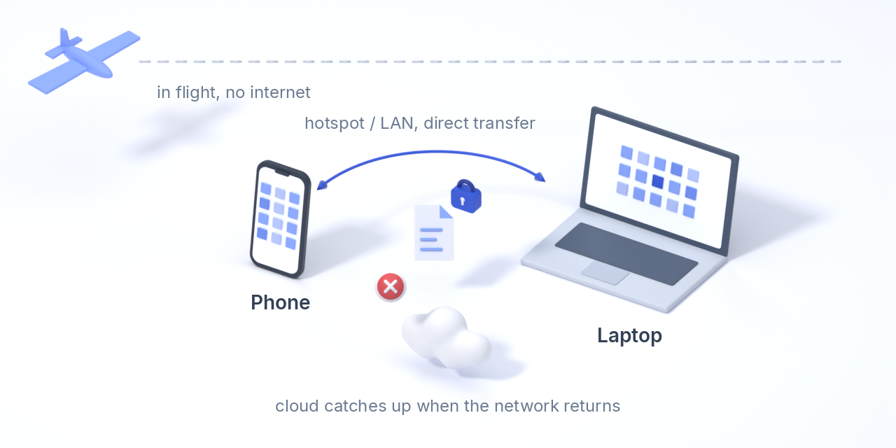
Vertaisyhteys (P2P) on oletuksena päällä jokaisessa laitteessa (portti 17893; varsto p2p disable kytkee sen pois). Uudesta tiedostosta ilmoitetaan ennen sen lähettämistä, joten saman verkon laitteesi hakevat sen suoraan, kun kopio tallennuspaikkoihin on vielä matkalla. Jokainen laite, jolla tiedosto on, voi jakaa sen salattuja lohkoja, tavulleen samoja objekteja, joita tallennuspaikat säilyttävät. Lohkoa tarvitseva laite kysyy ensin vertaisiltaan ja vasta sitten pilvestä, tarkistaa jokaisen lohkon sisältötiivistettä vasten ja jakaa työn vastaavien vertaisten kesken. Lähiverkossa laitteet löytävät toisensa itse; internetin yli ne saavat julkisen osoitteensa STUNin avulla, puhkaisevat NATin QUICin yli laitekohtaisesti kiinnitetyllä varmenteella, ja kun puhkaisu ei onnistu, ne kulkevat jonkin oman tavoitettavan laitteesi kautta (kotipalvelin, edelleenohjattu portti, VPS), joka näkee vain salakirjoitettua dataa. Vain holviavaimen haltija voi hakea mitään, ja liikkuva data on salakirjoitettua. Vertaiset-sivun reaaliaikainen liikennenäkymä (ja varsto p2p traffic --watch) näyttää, mikä laite lähettää mille, mitä reittiä ja kuinka nopeasti, mukaan lukien sen, mitä laite välittää kahden muun välillä. Mittaukset kolmen maan välillä: Suorituskykymittaukset.
Lohkot pakataan ennen salausta (zstd), joten jokainen siirto ja jokainen kopio on pieni, niin lähiverkossa kuin internetissä. NAT-läpäisyä on testattu vain localhostissa ja ylläpitäjän omissa verkoissa; holvilla, jonka kaikki laitteet ovat NATin takana, ei vielä ole reittiä internetin yli.
Strongroom: kansiot, jotka avautuvat vain suojausavaimellasi
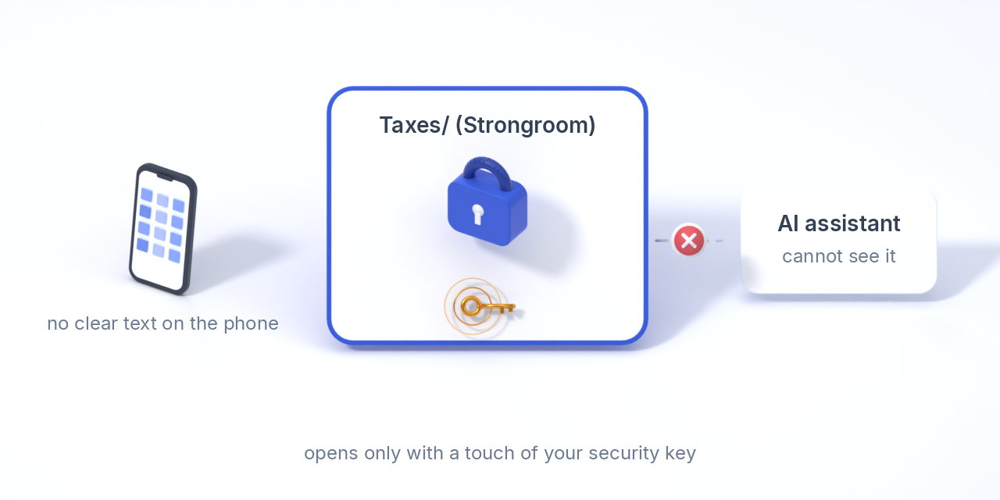
Strongroom-kansion avainta ei tallenneta mihinkään. Se on kääritty salaisuudella, jonka vain FIDO2-suojausavaimesi pystyy tuottamaan (hmac-secret-laajennus), joten saman avaimen kosketus avaa kansion holvin jokaisella laitteella, eikä mikään muu avaa: ei salalauseesi, ei holviavain eikä varastettu kannettava. Suojaus on kryptografinen, ei pelkkä valintaikkuna. Avaa lukitus määräajaksi, tee työsi, lukitse; lukittuna kansio ohitetaan synkronoinnissa, sitä ei voi jakaa, eikä se näy avustajille.
Liitä vara-avain, esimerkiksi toinen YubiKey, jota säilytät kassakaapissa: kumpikin avain käärii saman kansioavaimen, ja kumpi tahansa avaa sen. Olemassa olevan kansion voi muuttaa Strongroomiksi: se saa uuden avaimen, kaikki salataan uudelleen ja lähetetään uudestaan, vanhat kopiot poistetaan tallennuspaikoistasi, kun uudet ovat paikallaan, ja muut laitteesi vaihtavat selväkieliset kopionsa paikkamerkkeihin seuraavassa synkronoinnissa.
Vaatii libfido2-työkalut (fido2-cred, fido2-assert); kulun kokeilemista varten on ohjelmistoavain. Avaimen koskettaminen tapahtuu komentorivillä (varsto strongroom convert, add-key, rekey); käyttöliittymä näyttää komennon ja luettelee liitetyt avaimet. Laite, jolla vanha avain jo oli, on voinut säilyttää sen; avaimen poistaminen ei vaihda kansion avainta, varsto strongroom rekey vaihtaa.
Palautuspaketti paperille tai metallille
Tiliä ei ole, eikä avainta talleteta kenellekään: holviavain on vain sinun, joten sovellus auttaa sinua pitämään sen tallessa. varsto recovery kit tulostaa avaimen 24 sanana tarkistussummineen paperille tai metallille aseteltuna ja halutessasi kolmena osana, joista mitkä tahansa kaksi palauttavat avaimen ja yksi yksinään ei paljasta mitään, joten minkään yksittäisen paikan ei tarvitse sisältää kaikkea. Uusi laite liittyy suoraan sanojen avulla. Testaa se kerran vuodessa.
Poista kadonnut tai varastettu laite ja tyhjennä se etänä
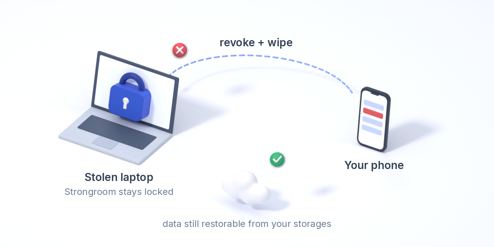
Miltä tahansa muulta laitteelta Poista laite kirjoittaa tallennuspaikkaasi allekirjoitetun oikeuksien perumisen. Sen jälkeen jokainen laite jättää huomiotta poistetun laitteen katkaisuhetken jälkeiset kirjanpitomerkinnät ja torjuu sen vertaisyhteydet, ja holvi siirtyy uuteen avaimeen, joka sinetöidään (X25519 + ML-KEM-768) vain jäljelle jääville laitteille: jokaisen kansion kirjanpito, tietueet, manifestit ja uudet tiedostot käyttävät avaimia, joita poistettu laite ei koskaan näe. Tyhjennysmääräyksen kanssa laite poistaa avaimensa, synkronointitilansa ja kansioiden sisällön, kun se seuraavan kerran tavoittaa tallennuspaikan; määräyksen allekirjoittaa jokin laitteistasi, joten tallennuspaikka tai joku, jolla on vanha holviavain, ei voi laukaista sitä.
Minkä poistettu laite pystyi lukemaan aiemmin, sen se pystyy lukemaan edelleen; muiden ihmisten kanssa jaetut kansiot ja Strongroom-kansiot säilyttävät avaimensa; tallennuspaikkojen tunnuksia ei vaihdeta puolestasi. Tulosta tämän jälkeen uusi palautuspaketti.
Organisaatiot: ylläpitäjät, hyväksynnät ja allekirjoitettu loki yrityskäyttöön
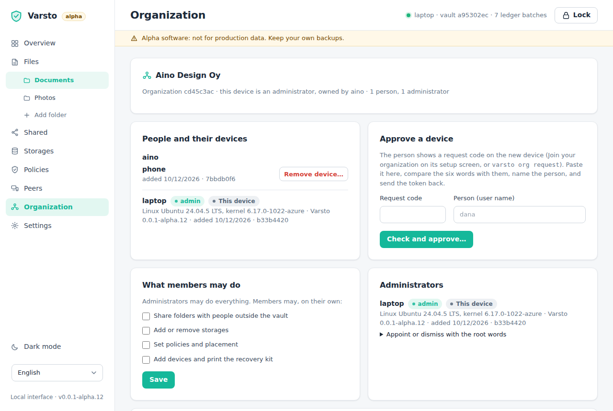
Käyttötapaus. Pieni yritys säilyttää projektikansionsa omassa bucketissaan. Toimistopäällikkö on ylläpitäjä: uusi työntekijä asentaa Varston ja lähettää pyyntökoodin, ja päällikkö vertaa hänen kanssaan puhelimessa kuutta sanaa ja hyväksyy kannettavan. Kun joku lähtee, yksi toimenpide poistaa hänet ja kaikki hänen laitteensa, ja jäljelle jäävät laitteet saavat uudet avaimet.
Holvissa on laitteita, ei ihmisiä, ja jokainen täysivaltainen laite on samanarvoinen. Organisaatio lisää kerroksen, jota yritys tarvitsee: ylläpitäjät hyväksyvät laitteita nimetyille henkilöille, poistavat henkilön ja kaikki hänen laitteensa yhdellä kertaa (holvi saa uudet avaimet, jotka vain jäljelle jäävät laitteet saavat; tyhjennysmääräyksen kanssa poistetut laitteet poistavat avaimensa ja kansioiden sisällön), määrittävät, mitä jäsenet saavat tehdä omin päin (jakaa holvin ulkopuolelle, lisätä tallennuspaikkoja, asettaa säilytyssääntöjä, lisätä laitteita), ja pitävät tästä lokia, jonka heidän laitteensa allekirjoittavat ja ketjuttavat, joten kukaan ei voi muuttaa sitä jälkikäteen huomaamatta. Laite liittyy pyyntökoodilla ja kuuden sanan sormenjäljellä, jota ylläpitäjä vertaa henkilön kanssa; hyväksyntätunniste, joka on sinetöity tuon laitteen avaimelle, sisältää holviavaimen ja tallennuspaikkojen asetukset. Muut laitteet jättävät huomiotta laitteen, joka liittyi pelkällä holviavaimella, kunnes ylläpitäjä lisää sen. Ylläpitäjät nimittävä juuriavain on 24 sanaa paperilla, ei koskaan laitteella.
Näin pääset alkuun. Asetusten Käytä tiimin kanssa tai varsto org create --name … --user … muuttaa holvin organisaatioksi; sen nykyisistä laitteista tulee perustajan laitteita, ja organisaation luova laite on ensimmäinen ylläpitäjä. Organisaatio-sivu luettelee ihmiset ja heidän laitteensa, hyväksyy uusia, määrittää, mitä jäsenet saavat tehdä, nimittää tai erottaa ylläpitäjiä 24 juurisanan avulla ja näyttää allekirjoitetun lokin (vietävissä JSON-muodossa); jäsenet näkevät sivun ilman ylläpitäjän toimintoja. Vain ylläpitäjät voivat poistaa laitteita, ja vertaiset torjuvat laitteet, jotka eivät ole jäsenluettelossa.
Holvi ilman organisaatiota pysyy ennallaan: ei uusia objekteja, ei uusia tarkistuksia eikä käyttöliittymässä mitään muuta kuin Asetusten Käytä tiimin kanssa -kortti. Tallennuspaikkojen tunnukset ovat edelleen yhteisiä eikä niitä vaihdeta, olemassa olevaa dataa ei salata uudelleen poiston jälkeen, eikä ylläpitäjän toiminnoissa ole vielä toista tunnistautumistekijää.
Suunnitelmissa myös
- QR-kutsut jakamiseen.
- Laitekohtaiset tallennuspaikkatunnukset, jotka vaihdetaan palveluntarjoajalla, kun laite poistetaan.
- Olemassa olevan datan salaaminen uudelleen laitteen poiston jälkeen.
- Paketit pienille tiedostoille.
- Inkrementaaliset manifestit.
- Vertaisten haku DHT:llä.
- Tallennuksen todistavat haasteet (proof-of-storage).
- Virheenkorjaava koodaus (erasure coding) tallennuspaikkojen yli.
- Salatut, sensuroidut lokit.
- File Provider- / Cloud Files -integraatio paikkamerkeille.
- Kameralähetys ja katseluohjelma iOS:lle.
- Toinen tunnistautumistekijä laitteen liittämiseen.
Jokainen Dokumentaatio-sivun suunnitteludokumentti kertoo, mitkä osat ovat olemassa. Mitään ei ole vielä auditoitu.